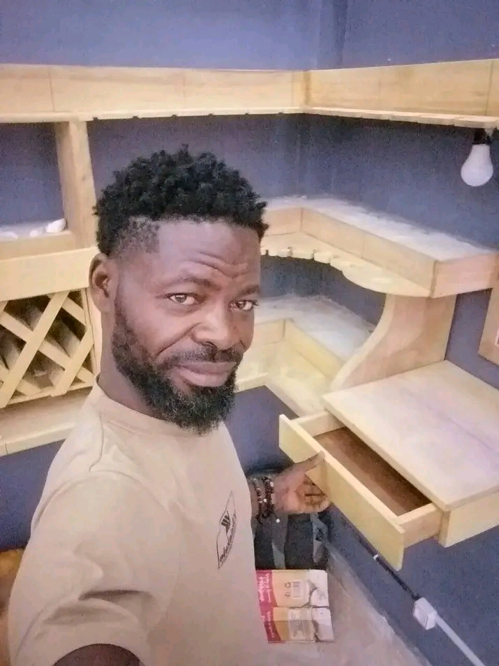

Nosso Time

Antônio Bento Ilídio Pedro
CEO e Fundador. Engenheiro Civil com mais de 25 anos de experiência no setor.
Mariana Oliveira
Engenheira Chefe. Especialista em grandes obras e sustentabilidade.
Ricardo Santos
Consultor Técnico. 15 anos de experiência em planejamento e consultoria de projetos.